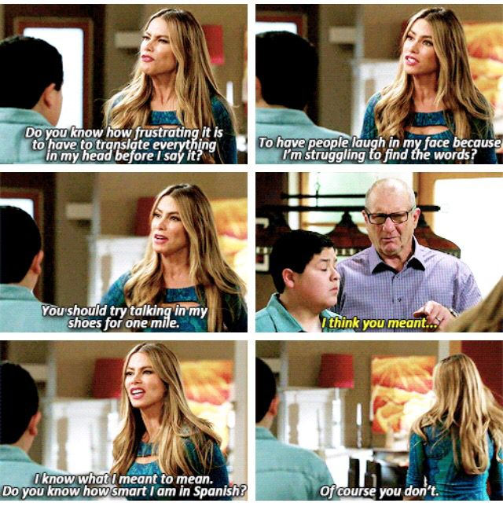

Do you know how smart I am in Portuguese?
Recently, several people at work said they liked my #writing.

English is not my native language. It’s Portuguese. I was actually a pretty good writer in Portuguese: I won a few writing contests, and got high writing grades in standardized tests.
I moved to the US when I was almost 30, and as much as I had studied English in high school and self-studied it quite a lot more, moving countries was hard. For example, most of the rote phrases that people say in daily interactions such as “how’s your weekend going?” were literally foreign to me. It took me a while to realize that nobody really wanted to know about my weekend.
Quite a bit of academics later, I started writing, mostly for myself. I found, to nobody’s surprise, that writing makes one’s thoughts clearer. About a year ago, I joined #Amazon. At Amazon, we literally write for a living. A number of work processes require writing documents. I also started to write to a broader audience here on LinkedIn, and I get the occasional (and very much appreciated) note from people that tell me that they like my writing and that it helped them.
I still don’t meet my own ever-rising bar, and I still throw away a lot of what I write. But writing has helped me gain clarity, and I hope it helps others, too!
This was posted to LinkedIn at https://www.linkedin.com/embed/feed/update/urn:li:share:6853333112810815488